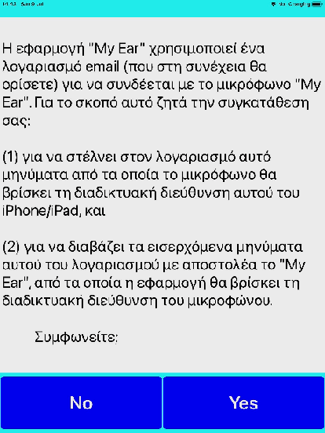

Την πρώτη φορά που θα τρέξει η εφαρμογή, εμφανίζεται η εξής οθόνη:
Αφού συμφωνήσουμε, θα πρέπει να εισάγουμε τα εξής στοιχεία:
Το όνομα του μικροφώνου (προκαθορισμένο: "My Ear"),
Λογαριασμό ηλεκτρονικού ταχυδρομίου, και
Κωδικό πρόσβασης.
(Για αρχή και δοκιμαστικά μπορούν να χρησιμοποιηθεί ως λογαριασμός ηλεκτρονικού ταχυδρομίου το "dimitrisdafinis@yahoo.com", με κωδικό πρόσβασης: "qolsrqqdrzbylgbp").
Μόλις αποθηκευτούν αυτά, η εφαρμογή τερματίζει, για να εισαχθούν τα ίδια στοιχεία και στο μικρόφωνο.